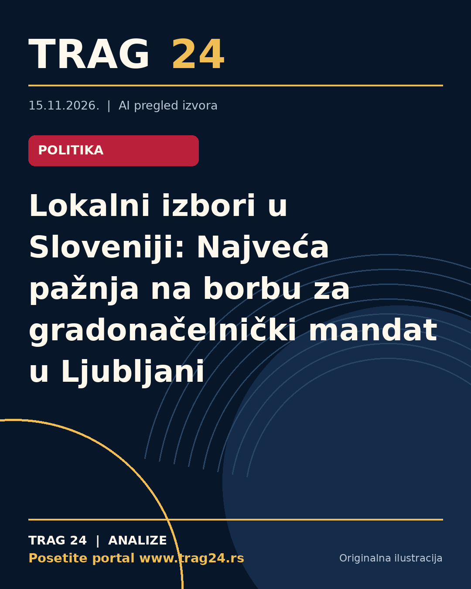

Lokalni izbori u Sloveniji: Najveća pažnja na borbu za gradonačelnički mandat u Ljubljani

ŠTA SE DOGODILO
Dana na biračka mesta u Sloveniji izlazi više od 1,6 miliona birača na devetim lokalnim izborima od nezavisnosti zemlje. Cilj je izbor gradonačelnika i opštinskih većnika u svih 212 opština. Najveća pažnja usmerena je na Ljubljanu, gde aktuelni gradonačelnik Zoran Janković teži sedmom uzastopnom mandatu, ali prvi put u poslednjih 20 godina postoje najave mogućeg drugog kruga izbora.
HRONOLOGIJA
Izbori se održavaju danas, a građani su imali mogućnost da glasaju i pre izbornog dana u periodu od utorka do četvrtka. Deveti su po redu od sticanja nezavisnosti Slovenije. Do sada je Janković bez prekida bio na vlasti u Ljubljani, ali aktuelne ankete pokazuju da bi ovog puta mogao da se suoči sa drugim krugom glasanja.
ŠTA NAVODE IZVORI
Svi izvori se slažu da su ankete javnog mnjenja pokazale da bi Janković trenutno dobio oko 33,2% glasova, dok je njegov protivkandidat Luka Mesec, predsednik Levice, na oko 22,9%. Sa liste kandidata za gradonačelnika Ljubljane pored njih dvojice, pomenuto je ukupno 12 ostalih kandidata uključujući bivšeg premijera Antona Ropa i bivšeg ministra finansija Klemena Boštjančiča. Što se tiče drugih većih gradova, očekuje se drugi krug i u Mariboru, gde su glavni kandidati Bor Greiner, nezavisni, i Matevž Frangež, kandidat sa podrškom više partija. U Kopru postoje kontradiktorne ankete s tim što jedna pokazuje potencijalni drugi krug između aktuelnog gradonačelnika Aleša Bržana i Nik Popoviča, dok druga daje prednost Bržanu za pobedu u prvom krugu. Jedna značajna promena je da državljani trećih zemalja sa stalnim prebivalištem ovog puta nemaju pravo glasa.
ŠTA JE POTVRĐENO
Potvrđeno je da glasačko pravo imaju više od 1,6 miliona stanovnika Slovenije. Organizacija izbora obuhvata svih 212 opština, što čini ovaj izborni ciklus značajnim događajem na lokalnom nivou. Takođe je potvrđeno da Janković već dve decenije obavlja funkciju gradonačelnika Ljubljane, što distancira aktuelne izbore kao potencijalno prelomne u njegovoj dugogodišnjoj političkoj karijeri. Različiti kandidati relevantnih opozicionih i političkih stranaka učestvuju u trci, kao i nezavisni kandidati u većim gradovima.
ŠTA NIJE POTVRĐENO
Nije potvrđeno konačno ko će u svim gradovima proći u drugi krug, kao ni konačni rezultati izbora, jer su izbori u toku. Nema potvrđenih podataka o tome kako će tačno odsustvo biračkog prava za državljane trećih država uticati na izlaznost ili ishod izbora. Takođe, ne može se potvrditi kako će raspored glasova među svim kandidatima iz drugih gradova uticati na lokalni politički pejzaž.
ŠTA OSTАJE OTVORENO: Ostaje otvoreno da li će Janković zaista biti primoran da ide u drugi krug glasanja i ukoliko do toga dođe, kakav će biti konačni ishod. Takođe je nepoznato kako će se promena prava glasa odraziti na glasanje u opštinama sa znatnim brojem državljana trećih zemalja. Dodatno, na rezultatima izbora u drugim većim centrima poput Maribora i Kopra takođe je ostalo da se vidi tačan ishod posle mogućih drugorundskih izbora.
Ukupni podaci potiču iz više ovih izvora: Novosti, Vreme i N1, koji su pružili slične informacije o broju glasača, kandidatima i očekivanim ishodima anketa, uz male razlike u pojedinostima o pojedinim lokalitetima.
Izvori
- https://www.novosti.rs/planeta/region/1671291/slovenija-izbori-gradonacelnici-opstinska-veca-najnovije-vesti
- https://vreme.com/razno/lokalni-izbori-slovenija-zoran-jankovic-ljubljana-gradonacelnici/
- https://n1info.rs/region/danas-lokalni-izbori-u-sloveniji-najveca-neizvesnost-u-ljubljani/
Ova analiza je pripremljena uz pomoć veštačke inteligencije na osnovu javno dostupnih izvora. Navodi izvora nisu nužno nezavisno potvrđeni.